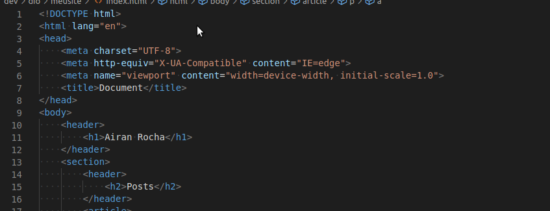

Post #1
A Apollo 7 foi um voo espacial tripulado norte-americano e a primeira missão tripulada do Programa Apollo. O voo marcou volta de humanos ao espaço pelo programa espacial dos Estados Unidos depois do incêndio da Apollo 1 em janeiro de 1967. A tripulação era formada por Walter Schirra, Donn Eisele e Walter Cunningham, com os três tendo sido inicialmente designados para a segunda missão do programa e depois como reservas da Apollo 1. Voos espaciais foram suspensos depois do incêndio enquanto as investigações ocorriam e melhorias eram implementadas na espaçonave e nos procedimentos de segurança, com testes não-tripulados tendo ocorrido. Os três astronautas passaram meses em treinamento e também longos períodos monitorando a construção de seu Módulo de Comando e Serviço com o objetivo de impedir um acidente similar ao incêndio.